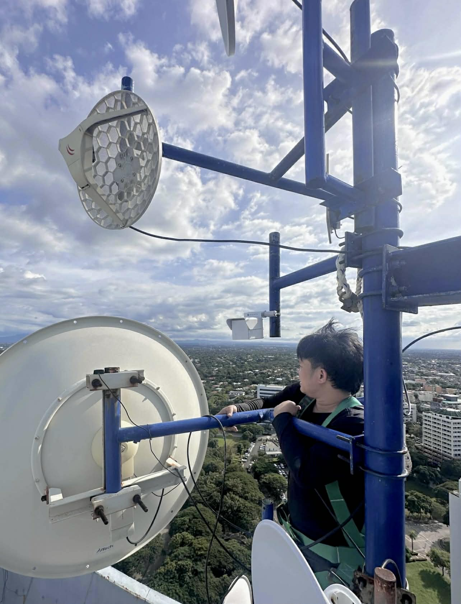
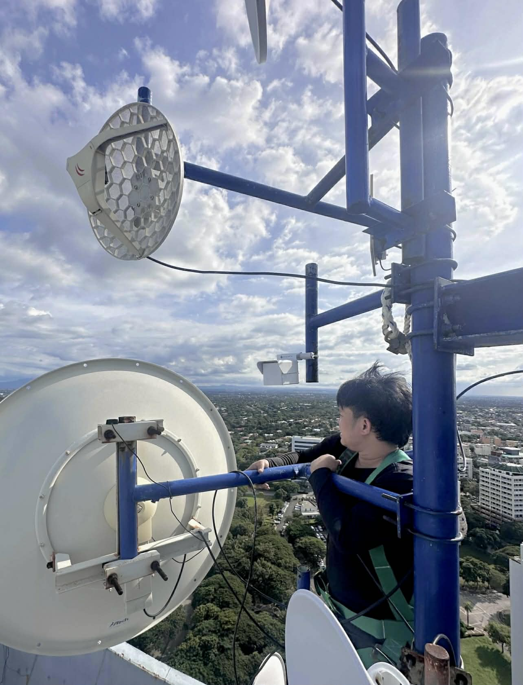

About Me
I am Neil Daryl D. Benitez, a results-driven Computer Engineering graduate from Lyceum of Alabang (Class of 2023, Best in OJT), with proven expertise in IT infrastructure, network operations, and field support. My passion for technology began in senior high school under the ICT strand, where I developed a strong foundation in networking, systems, and hardware.
As an IT Support Intern at The Seashore Beach Club, I installed and laid out UTP and optical fiber cables for CCTV systems to enhance resort security, telephone lines to ensure seamless communication from the lobby to guest rooms and buildings, and deployed timed Wi-Fi access for guests.
After graduation, I worked as a Field Service Engineer at One Point Contact Inc., performing preventive maintenance, troubleshooting, parts replacement, and rewiring as needed on ATMs servicing major banks such as BDO, Metrobank, PSBank, EastWest, PNB, PBCOM, and 7-Eleven. I focused on minimizing downtime and ensuring high client satisfaction.
Currently, I work as a NOC Engineer at Htech Corporation, where I monitor and troubleshoot network performance, manage incident tickets, and conduct field installations, repairs, and maintenance. I support clients across MIMAROPA, CALABARZON, and northern provinces, including DICT, police agencies, hotels, and BPO companies, ensuring reliable and uninterrupted network operations.
Download Resume 
